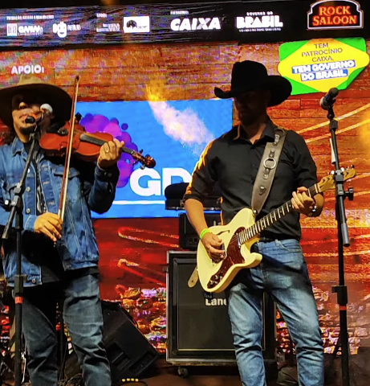
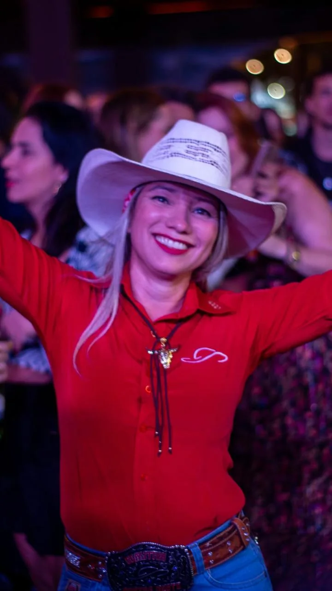
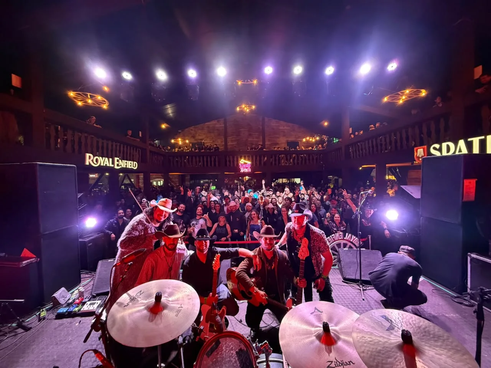

Nossa história
Do cerrado
para o rodeio
O começo
Country americano de verdade, nascido em Brasília
A Midwest Rodeo Band é talvez a única banda reconhecida pela própria Embaixada dos Estados Unidos como uma verdadeira e tradicional banda de American Country Music.
Nascida em Brasília, ela leva o movimento country, presente e pulsante no coração do Brasil, a todo o Centro-Oeste.
O som
Do Western Swing ao Honky Tonk

A banda é dedicada à essência do country americano. O som passeia pelo Western Swing, Texas Country, Honky Tonk, Outlaw Country e Traditional Country.
O fiddle do Michael e a guitarra do Paulo conversam o show inteiro, enquanto o baixo do Bobby e a bateria do Sérgio seguram o galope.
O palco
Um rodeio inteiro em cima do palco

Com Johnny Colorado na voz, a banda recria o clima dos grandes rodeios, honky tonks, saloons e estradas do interior americano.
O show junta autenticidade, interação com o público, energia e presença de palco.
O repertório
Casa cheia, chapéu no alto

O repertório traz Alan Jackson, George Strait, Dwight Yoakam, Alabama, Garth Brooks, Brooks & Dunn e muitos outros.
É feito para quem é apaixonado por country e também para quem só gosta de música boa, guitarra e fiddle, com o legítimo espírito de estrada e vida no campo.